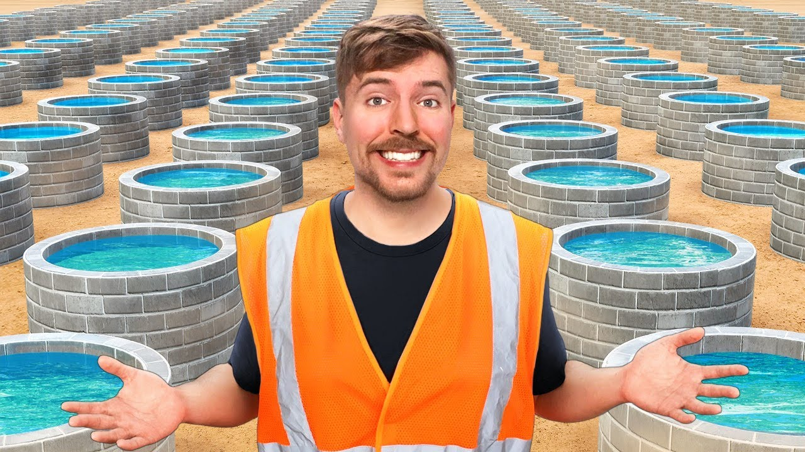

IMPACT
Current Projects
Saving 1000 Animals
Beast Philantrhopy has helped to save over 1000 animals so far across four different continents. This project has helped to provide essentials to animals like food, medicine, and habitat reconstruction. Despite the goal already being reached the project is ongoing.
Building 100 Wells
One of Beast Philanthropy's longest running project is building wells for people with little access to clean drinking water. Already over 100 wells have been build across 5 different countries in Africa and donations will help build new wells and also maintain existing ones.

Other Work
Beast Philanthropy's other projects can be found on their youtube page located here.